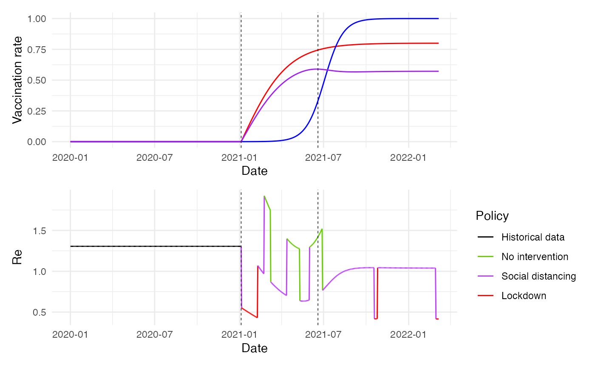

Vaccination and new variant
Sandor Beregi
2025-05-01
vaccine_variants_MPC.RmdOverview
This vignette demonstrates model predictive optimal control of ICU cases for COVID-19 with vaccination and emerging delta variant.
Load Libraries and Setup
Load the required libraries and initialize the simulation environment.
## Loading required package: stats4## Loading required package: splines##
## Attaching package: 'zoo'## The following objects are masked from 'package:base':
##
## as.Date, as.Date.numeric##
## Attaching package: 'dplyr'## The following objects are masked from 'package:stats':
##
## filter, lag## The following objects are masked from 'package:base':
##
## intersect, setdiff, setequal, union
set.seed(1)Load data
# from here: https://www.thelancet.com/journals/lanpub/article/PIIS2468-2667(22)00060-3/fulltext
data <- read_dta('covid_data/Data_from_OxCGRT.dta')
# Filter rows where country is "United Kingdom"
uk_data <- subset(data, country == "United Kingdom")
pop_data <- read_dta('covid_data/World_population_world_bank.dta')
uk_pop <- pop_data[251, 2]
# Convert date column to Date type if necessary
uk_data$date_mdy <- as.Date(uk_data$date_mdy, format="%m/%d/%Y")
uk_data$daily_cases_100k <- round((uk_data$daily_cases_100k)*67215293/1e5, digits = 0)
uk_data$daily_cases_100k[is.na(uk_data$daily_cases_100k)] <- 0
real_days <- 370LInitialize the cluster for parallel computing:
cores <- detectCores() - 1
cl <- makeCluster(cores)
clusterSetRNGStream(cl, iseed = 20250501)Epidemiological and Noise Parameters
Define parameters for pathogens and noise: Can include different pathogens, in this case we consider COVID-19 and Ebola virus.
Epi_pars <- data.frame(
Pathogen = c("COVID-19", "Ebola"),
R0 = c(1.305201/0.5, 2.5),
gen_time = c(6.5, 15.0),
gen_time_var = c(2.1, 2.1),
CFR = c(0.0132, 0.5),
mortality_mean = c(10.0, 10.0),
mortality_var = c(1.1, 1.1)
)
Noise_pars <- data.frame(
repd_mean = 10.5, # Reporting delay mean
del_disp = 5.0, # Reporting delay variance
ur_mean = 0.3, # Under-reporting mean
ur_beta_a = 50.0 # Beta distribution alpha for under-reporting
)Action Space for Policy Interventions
Define non-pharmaceutical interventions: We have 2 actions, introducing a “lockdown” and no interventions.
# Setting-up the control (using non-pharmaceutical interventions)
Action_space <- data.frame (
NPI = c("No restrictions", "Social distancing", "Lockdown"),
R_coeff = c(1.0, 0.5, 0.2), #R0_act = R0 * ctrl_states
R_beta_a = c(0.0, 5.0, 5.0), #R0_act uncertainty
cost_of_NPI = c(0.0, 0.01, 0.15)
)Simulation Setup
Set up key parameters and initialize simulation data:
ndays <- real_days+61L*7L#epidemic length #simulation length
N <- 1e7 # population size
I0 <- 10 # initial infections
#Simulation parameters
n_ens <- 20L #MC assembly size for 4
sim_ens <- 20L #assembly size for full simulation
C_target <- 5000
D_target <- 12
r_trans_len <- 7
sim_settings <- list(
ndays = ndays, #simulation length
start_day = real_days,
N = N, # population size
I0 = I0, # initial infections
C_target = C_target, #target cases
C_target_pen = C_target*1.5, #overshoot penalty threshold
R_target = 1.0,
D_target = D_target, #one way to get peaks at 400 is to increase this to 15
D_target_pen = 50, #max death
alpha = 1.3/C_target, #~proportional gain (regulates error in cases) covid
#alpha = 3.25/C_target #~proportional gain (regulates error in cases) ebola
alpha_d = 0*1.3/D_target,
ovp = 5.0, #overshoot penalty
dovp = 0*10.0, #death overshoot penalty
gamma = 0.95, #discounting factor
n_ens = n_ens, #MC assembly size for 4
sim_ens = sim_ens, #assembly size for full simulation
rf = 7L, #days 14
R_est_wind = 5L, #rf-2 #window for R estimation
pred_days = 12L,
r_trans_steep = 1.5, # Growth rate
r_trans_len = r_trans_len, # Number of days for the transition
t0 = r_trans_len / 2, # Midpoint of the transition
pathogen = 1,
susceptibles = 0,
delay = 1,
ur = 1,
r_dir = 2,
LD_on = 14, #on threshold
LD_off = 7, #off threshold
v_max_rate = 0.8,
vac_scale = 100,
vac_start = 370,
delta_scale = 40,
delta_start = 550,
delta_multiplier = 1.75,
v_protection_delta = (58+85)/200,
v_protection_alpha = 0.83
)
# Original episim_data
column_names <- c("days", "sim_id", "I", "Lambda", "C", "Lambda_C", "S", "Re", "Rew", "Rest", "R0est", "policy", "R_coeff", "Real_C", "vaccination_rate", "delta_prevalence","immunity")
# Create an empty data frame with specified column names
empty_df <- data.frame(matrix(ncol = length(column_names), nrow = 0))
colnames(empty_df) <- column_names
# Print the structure of the empty data frame
# Create a zero matrix with 10 rows
zero_matrix <- matrix(0, nrow = ndays, ncol = length(column_names))
colnames(zero_matrix) <- column_names
# Combine empty data frame and zero matrix using rbind
episim_data <- rbind(empty_df, zero_matrix)
#initialisation
episim_data['policy'] <- rep(3, ndays)
episim_data['sim_id'] <- rep(1, ndays)
episim_data[1:real_days,] <- c(1, 1, I0, I0, Noise_pars['ur_mean']*I0, Noise_pars['ur_mean']*I0, N-I0, Epi_pars[1,'R0']*0.5, Epi_pars[1,'R0']*0.5, Epi_pars[1,'R0']*0.5, Epi_pars[1,'R0'], 2, 0.5, 0, 0, 0, 0)
episim_data['days'] <- 1:ndays
episim_data['date'] <- uk_data$date_mdy[1:ndays]
episim_data[1:real_days,"C"] <- uk_data$daily_cases_100k[1:real_days]
episim_data[1:real_days,"I"] <- uk_data$daily_cases_100k[1:real_days]/0.3
episim_data[1:nrow(episim_data),"Real_C"] <- uk_data$daily_cases_100k[1:nrow(episim_data)]
# get infectiousness and estimated R-s
gen_time <- 6.5
gen_time_var <- 2.1
R_est_wind <- 5 # Define your window size
Ygen <- dgamma(1:nrow(uk_data), gen_time/gen_time_var, 1/gen_time_var)
Ygen <- Ygen/sum(Ygen)
# Estimate R
for (ii in 1:real_days+1) {
if (ii-1 < R_est_wind) {
episim_data[ii, 'Rest'] <- mean(episim_data[1:(ii-1), 'C']) / mean(episim_data[1:(ii-1), 'Lambda_C'])
R_coeff_tmp <- sum(Ygen[1:(ii-1)] * episim_data[(ii-1):1, 'R_coeff']) / sum(Ygen[1:(ii-1)])
} else {
if ( mean(episim_data[(ii-R_est_wind):(ii-1), 'Lambda_C']) == 0){
episim_data[ii, 'Rest'] <- 0
R_coeff_tmp <- 1
} else {
episim_data[ii, 'Rest'] <- mean(episim_data[(ii-R_est_wind):(ii-1), 'C']) / mean(episim_data[(ii-R_est_wind):(ii-1), 'Lambda_C'])
R_coeff_tmp <- sum(Ygen[1:(ii-1)] * episim_data[(ii-1):1, 'R_coeff']) / sum(Ygen[1:(ii-1)])
}
}
episim_data[ii, 'R0est'] <- episim_data[ii, 'Rest'] / R_coeff_tmp
episim_data[ii, 'Lambda_C'] <- sum(episim_data[(ii-1):1,'C']*Ygen[1:(ii-1)])
episim_data[ii, 'Lambda'] <- sum(episim_data[(ii-1):1,'I']*Ygen[1:(ii-1)])
}
Epi_pars[1,"R0"] <- episim_data[real_days, 'R0est']
episim_data_ens <- replicate(sim_ens, episim_data, simplify = FALSE)
for (ii in 1:sim_ens) {
episim_data_ens[[ii]]$sim_id <- rep(ii, ndays)
}Running the Simulation
Run simulations in parallel using the pblapply function:
episettings <- list(
sim_function = Epi_MPC_run_V,
reward_function = reward_fun,
R_estimator = R_estim,
noise_par = Noise_pars,
epi_par = Epi_pars,
actions = Action_space,
sim_settings = sim_settings,
parallel = TRUE
)
episim_data_ens <- replicate(sim_ens, episim_data, simplify = FALSE)
for (ii in 1:sim_ens) {
episim_data_ens[[ii]]$sim_id <- rep(ii, ndays)
}
episettings$cl <- cl
results <- epicontrol(episim_data_ens, episettings)## [1] 0
## | | | 0%
episim_data_ens <- results
stopCluster(cl)
#for (jj in 1:sim_ens) {
# episim_data_ens[[jj]] <- Epi_MPC_run_wd(episim_data_ens[[jj]], Epi_pars, Noise_pars, Action_space, pred_days = pred_days, n_ens = n_ens, ndays = nrow(episim_data), R_est_wind = R_est_wind, pathogen = 1, susceptibles = 0, delay = 0, ur = 0, r_dir = 2, N = N)
# setTxtProgressBar(pb,jj)
#}
#close(pb)
# Combine Simulation Results
combined_data <- do.call(rbind, episim_data_ens)Plotting results
combined_data <- combined_data %>%
group_by(sim_id, policy) %>%
arrange(days) %>%
mutate(group = cumsum(c(1, diff(days) != 1))) %>%
ungroup()
combined_data <- combined_data %>%
arrange(sim_id, days, policy)
policy_labels <- c("0" = "Historical data", "1" = "No intervention", "2" = "Social distancing", "3" = "Lockdown")
critical_immunity <- 1-1/(1.305201/0.5)
difference <- combined_data$immunity - critical_immunity
# Find the index of the first positive value
switch_index <- which(difference > 0)[1]
# Get the corresponding day (row index, assuming days are rows)
#switch_day <- if (!is.na(switch_index)) switch_index else NA
switch_day <- 536
# Print the result
if (!is.na(switch_day)) {
cat("The switch from negative to positive occurs on day:", switch_day, "\n")
} else {
cat("No switch from negative to positive was found.\n")
}## The switch from negative to positive occurs on day: 536
combined_data$policy[combined_data$days < real_days] <- 0
combined_data$date <- as.Date("2020-01-01") + (combined_data$days - 1)
# Assuming combined_data has a 'date' column
ggplot(combined_data %>% filter(sim_id == 1)) +
geom_line(data = subset(combined_data, sim_id != 1),
aes(x = date, y = C, color = as.factor(sim_id)), alpha = 0.1) +
geom_line(aes(x = date, y = C, color = factor(policy, labels = policy_labels), group = 1), alpha = 1.0) +
geom_line(aes(x = date, y = Real_C, color = "blue", group = 1), alpha = 1.0, size = 0.25) +
geom_hline(yintercept = C_target, linetype = "dashed", color = "blue", size = 0.25) +
geom_vline(xintercept = as.Date("2020-01-01") + (real_days - 1),
linetype = "dashed", color = "black", size = 0.25) +
geom_vline(xintercept = as.Date("2020-01-01") + (switch_day - 1),
linetype = "dashed", color = "black", size = 0.25) +
labs(x = "Date", y = "Reported cases", color = "Policy") +
scale_color_manual(values = c("No intervention" = "chartreuse3",
"Social distancing" = "darkorchid1",
"Lockdown" = "red",
"Historical data" = "black")) +
guides(color = guide_legend(title = "Policy")) ### Show Vaccination and immunity rates and Re
### Show Vaccination and immunity rates and Re
library(patchwork)
plot1 <- ggplot(combined_data %>% filter(sim_id == 1)) +
geom_line(data = subset(combined_data, sim_id == 1),
aes(x = date, y = vaccination_rate), color = "red", alpha = 1.0) +
geom_line(data = subset(combined_data, sim_id == 1),
aes(x = date, y = delta_prevalence), color = "blue", alpha = 1.0) +
geom_line(data = subset(combined_data, sim_id == 1),
aes(x = date, y = immunity), color = "purple", alpha = 1.0) +
geom_vline(xintercept = as.Date("2020-01-01") + (real_days - 1),
linetype = "dashed", color = "black", size = 0.25) +
geom_vline(xintercept = as.Date("2020-01-01") + (switch_day - 1),
linetype = "dashed", color = "black", size = 0.25) +
labs(x = "Date", y = "Vaccination rate") +
ylim(0, 1) +
theme_minimal()
# Update plot2 with dates
plot2 <- ggplot(combined_data %>% filter(sim_id == 1)) +
geom_line(aes(x = date, y = Re, color = factor(policy, labels = policy_labels), group = 1), alpha = 1.0) +
scale_color_manual(values = c("No intervention" = "chartreuse3",
"Social distancing" = "darkorchid1",
"Lockdown" = "red",
"Historical data" = "black")) +
labs(x = "Date", y = "Re", color = "Policy") +
guides(color = guide_legend(title = "Policy")) +
geom_vline(xintercept = as.Date("2020-01-01") + (real_days - 1),
linetype = "dashed", color = "black", size = 0.25) +
geom_vline(xintercept = as.Date("2020-01-01") + (switch_day - 1),
linetype = "dashed", color = "black", size = 0.25) +
theme_minimal()
# Combine the two plots using patchwork
combined_plot <- plot1 / plot2
combined_plot